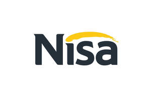

Trade Mark Journal No.2025/015 11 April 2025
UK00004181759 31 March 2025 (35)
Mark 1

Mark 2
- Class 35
- Retail and wholesale services relating to food and drink, prepared meals; processing purchase orders; retail services, shop retail services, mail order retail services and electronic shopping retail services connected with the sale of foodstuff, meat, fish, poultry and game, sea foods and food products made there from, meat extracts, preserved, dried and cooked fruits and vegetables, nuts jellies, jams, fruit sauces, dairy products, eggs, milk and milk products, edible oils and fats, snack foods and prepared meals, potato crisps ice cream and ice confectionery, soups, prepared meals, snack foods, pasta and pasta products, pizza and pizza topping, non-medicated confectionery and chocolate, coffee, tea, cocoa, drinking chocolate, sugar, rice, tapioca, sago, artificial coffee, flour and preparations made from cereals, bread, pastry, biscuits, cakes, pies, flans, tarts, waffles, cheesecake, puddings, pastries, bread and shortbread, desserts, salad dressings ices, honey, treacle, yeast, baking powder, salt, pepper mustard, vinegar, sauces (condiments), spices, ice, flowers and plants, grains, cat litter, malt, fresh fruits and vegetables, natural plants and flowers, beers, mineral and aerated waters and other non-alcoholic drinks, fruit drinks and fruit juices, syrups and other preparations for making beverages, alcoholic beverages; retail services, shop retail services, mail order retail services and electronic shopping retail services connected with the sale of non-medicated cosmetics and toiletry preparations, dentifrices, Perfumery, essential oils, Cleaning preparations, polishing preparations, scouring and abrasive preparations, disinfectants, sanitary preparations for medical purposes, supplements for human beings, plasters, materials for dressings, small items of hardware, Hand tools and implements, cutlery, masks, manicure sets, penknives, rakes, trowels, spectacles, spectacle frames, lenses, contact lenses, sunglasses, cases for eyeglasses and sunglasses, household and domestic electrical and electronic apparatus and instruments, apparatus and instruments for the recording, transmission, reception, processing or reproduction of sound, images or data, electronic games and amusement apparatus, MP3 players, television apparatus, video apparatus, DVD apparatus, computers, computer software relating to insurance, mobile phone accessories, cases adapted for mobile phones, holders adapted for mobile phones, electronic greetings messages and digital greetings messages, electronic greetings cards, digital greetings cards and downloadable ringtones, recordings, weighing apparatus and instruments, magnetic encoded cards and cards bearing machine readable information being loyalty, gift, insurance or prepaid cards; retail services, shop retail services, mail order retail services and electronic shopping retail services connected with the sale of cameras, photographic films, MP3s, JPEGs, MPEGs CDs and DVDs, fire extinguishing apparatus, fire alarms, fire blankets, fireworks, answering machines, binoculars, burglar alarms, security lights, smoke detectors, batteries, downloadable electronic publications, surgical, medical, dental and veterinary apparatus and instruments, orthopedic articles, suture materials, sex aids, massage apparatus, supportive bandages, luggage, bags, umbrellas, printed matter and printed publications, books, magazines, leaflets, brochures, newsletters, periodical publications, calendars, address books, stickers, paper, writing paper, envelopes, cardboard, cardboard articles for the storage and display of goods, writing and drawing instruments, modelling materials, stationery, wrapping and packaging materials, plastic bags, carrier bags, office requisites, kitchen towels, toilet tissue, facial tissue, food bags, freezer bags, greaseproof paper, cling-film, films and wrappings for food, disposable nappies, containers made wholly or principally of plastic materials, articles made of basket-ware, coat hangers, clothes pegs, trays, mats for sinks, furniture, cabinet furniture, tables, chairs, beds, occasional furniture, kitchen table and chairs, office furniture, mirrors, picture frames, drinking straws, beds, bedding (except lining), mattresses, futons, sofa beds, cots and cradles, sleeping bags, cushions and pillows, coffins, bread bins, linen hampers, tubs for shrubs, bathroom cabinets, haberdashery, lanyards, hair accessories, household or kitchen utensils and containers, combs and sponges, brushes, articles for cleaning purposes, glass, glassware, porcelain and earthenware, gloves for household purposes, steel wool, toothbrushes, dental floss, watering devices, racks, bins, lavatory brushes, holders for lavatory brushes, cutlery trays, vacuum flasks, brooms, mops and dusters, sanitary bins, bowls, buckets, bath racks, vegetable racks, cutlery trays and plate racks, cleaning cloths, sponges, dusters, wipes, scorers, scouring pads, toothbrushes, cold boxes, ironing boards and covers, textiles, towels and tea towels, bed linen, tablecloths, facecloths, curtains, throws, cushions, household textile articles, dishcloths, table linen, coasters, table mats, and table covers, curtains, bedding, bedspreads, bed sheets, pillow cases, bed blankets, quilts, duvets, covers for pillows, cushions or duvets, towels, net curtaining, upholstery fabrics, loose covers for furniture, furniture coverings of textile, travellers' rugs, textiles for making articles of clothing, clothing, articles of outer clothing and underclothing, infants and children's clothing, sweatshirts, T-shirts, tracksuits, polo shirts, sports clothing, weather resistant apparel, rainwear, waterproof clothing, leisure wear, shirts, coats, jackets, trousers, jeans, vests, shorts, skirts, blouses, overcoats, sweaters, pullovers, cardigans, ties, belts, headwear, caps, hats, socks, gloves, footwear, swimming costumes, scarves, toys, games, sporting equipment; Food and grocery ordering services; online ordering services in the field of restaurant take-out, groceries shopping and delivery thereof; product ordering and delivery services; Customer loyalty and loyalty card services; organisation, operation and supervision of loyalty and incentive schemes; Administration of a discount program for enabling participants to obtain discounts on goods and services through use of a discount membership card; advertising; advertising services provided via the Internet.
Nisa Retail Limited
Representative: Harrison IP Limited